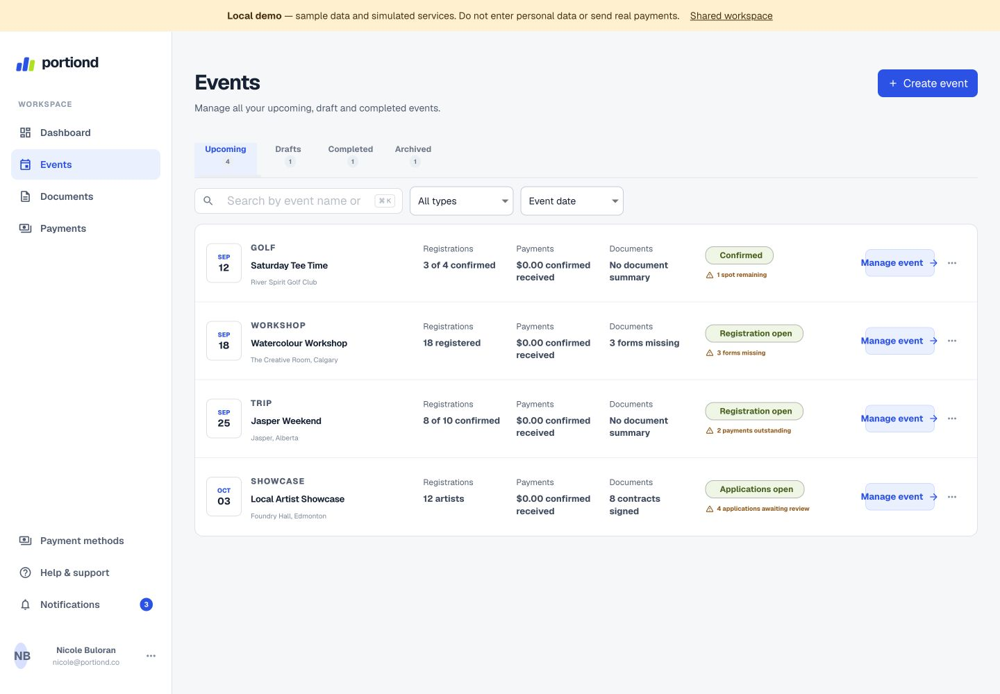
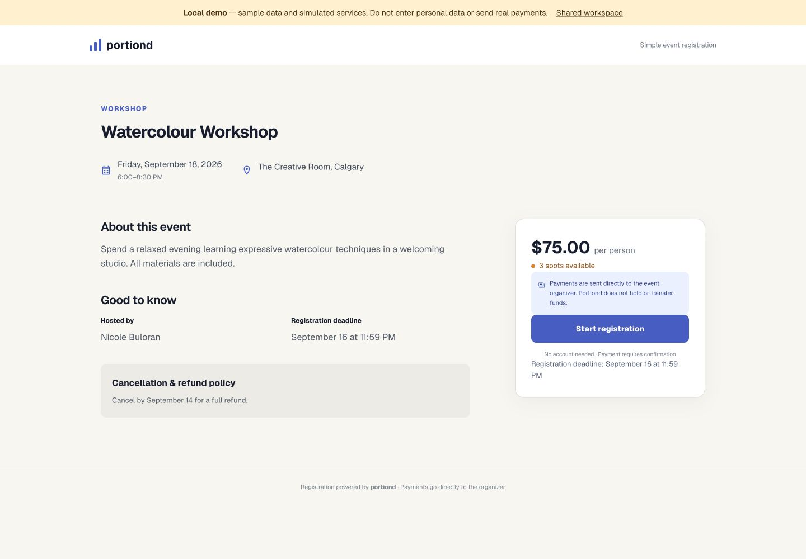
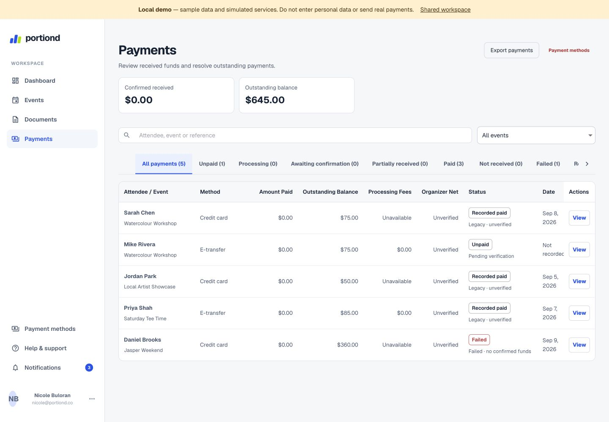
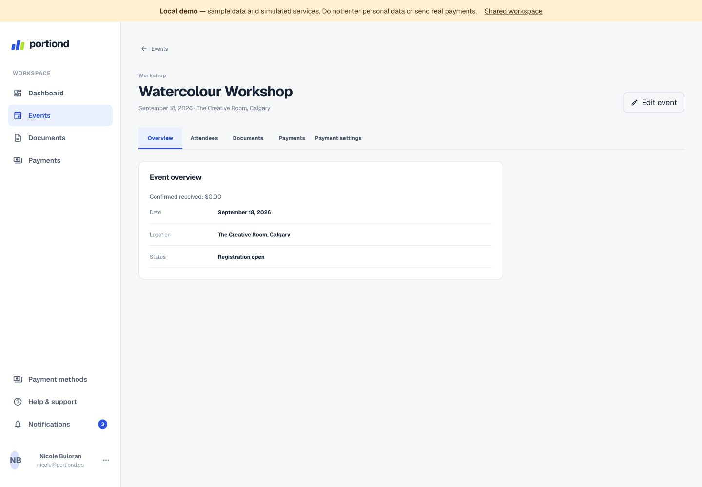

Event management
Create and organize event drafts in one workspace, with dates, capacity, pricing, and registration settings.
Implemented · Pilot setup requiredBuilding for early organizers
Registrations, payments, participant details, and event paperwork—all in one place. Spend less time managing the details and more time running great events.
Our vision for simpler event operations. Beta is being prepared.

The organizer's reality
The workshop is the easy part. It's everything around it that fills your evening.
A simpler flow
The workflow we're building toward. Event drafts and manual payment review are implemented for pilot setup; public registration and document collection are still being prepared.
Add event details, pricing, and registration settings.
Draft tools implementedGive participants a simple place to sign up.
Planned for betaTrack registrations, outstanding payments, and required documents.
Partly implementedSee what needs attention and manage the event from one dashboard.
Overview in developmentOne place for the details
A focused set of tools for independent organizers. Here's where things stand as we prepare the beta.
Create and organize event drafts in one workspace, with dates, capacity, pricing, and registration settings.
Implemented · Pilot setup requiredAn event-specific page for participant details. The preview is built; live registration is still being connected.
In developmentReview recorded payments and outstanding balances, including manually confirmed e-transfers. Online checkout is not available yet.
Manual review implementedKeep attendee information connected to its event. Live participant workflows depend on the registration integration.
In developmentRequired forms and participant submissions, once secure live storage is enabled. File collection and e-signatures are not live.
PlannedA view of registrations, payments, and outstanding tasks. The prototype brings these together; live reporting is still in development.
Prototype previewMade for your kind of event
For independent organizers who bring people together—once in a while or every week.
More time for making.
More time for teaching.
More time for connection.
More time together.
Take a closer look
Real captures from the Portiond application prototype. All names, events, amounts, and statuses shown are sample data. Screens are previews, not a promise that every feature is live.



Help shape what's next
We're preparing Portiond for early organizers. Join the list to hear when beta access is available and help shape what comes next.
No launch date or final pricing yet. Just a chance to help build something useful for your events.
Signups are handled by our existing Tally form. Choose your email preferences there; joining the list doesn't create an organizer account.
Open signup form in a new tabForm not loading? Continue directly on Tally. Please wait for Tally's confirmation after submitting.
A few useful answers
Portiond is an event operations platform in development for independent organizers. We're bringing event setup, registrations, payment tracking, participant details, and paperwork into one place.
People running workshops, small classes, retreats, community activities, and recurring group events. You don't need to be a large event company to need a more organized way to work.
Online payment collection is not available yet. Manual payment review has been implemented for the pilot workspace, including organizer confirmation of e-transfers against bank records. It requires configured live records; Portiond does not currently provide checkout or automatically verify bank transfers.
The registration flow is being designed so attendees can sign up without creating an account. You can see that flow in the prototype; public registration is not live yet.
We're preparing for beta. Event drafts and manual payment review are implemented, while registration, payment integrations, secure document storage, and other workflows still need work. Join early access to hear when access is available.
Pricing hasn't been finalized. We'll share the details before you choose to use a paid plan.